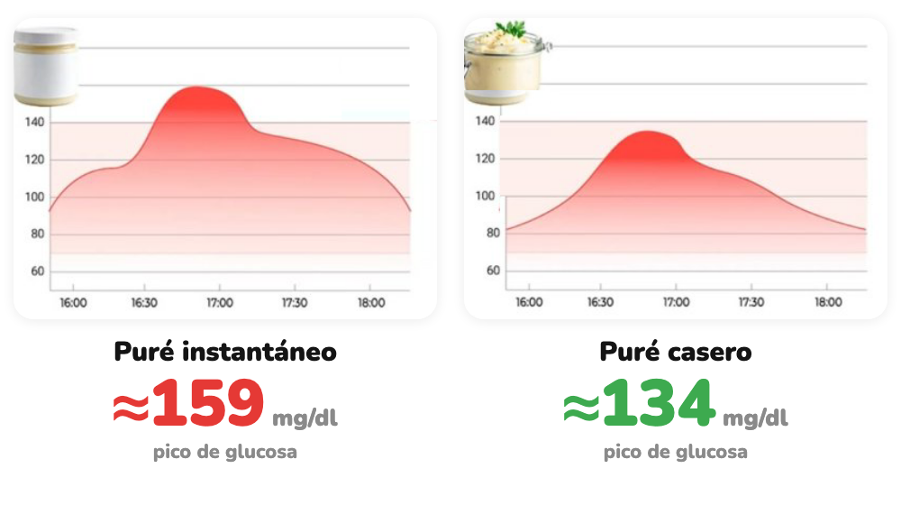

Cómo afecta
Mismo puré. Distinta respuesta.
De copos o de patata cocida: tu glucosa lo nota.
Desliza →
Hacemos visible lo invisible
De copos o de patata cocida: tu glucosa lo nota.
Desliza →

Curvas reales de una Viber; picos leídos en la gráfica. La respuesta puede variar entre personas.
Cocinar tus comidas de la forma más natural posible ayuda a tu curva.
Desliza →
glucovibes.com